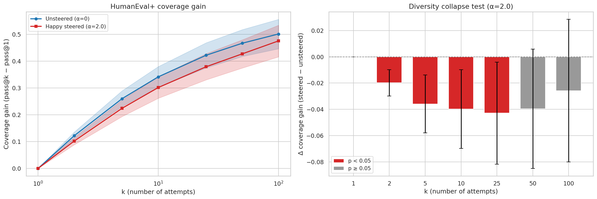
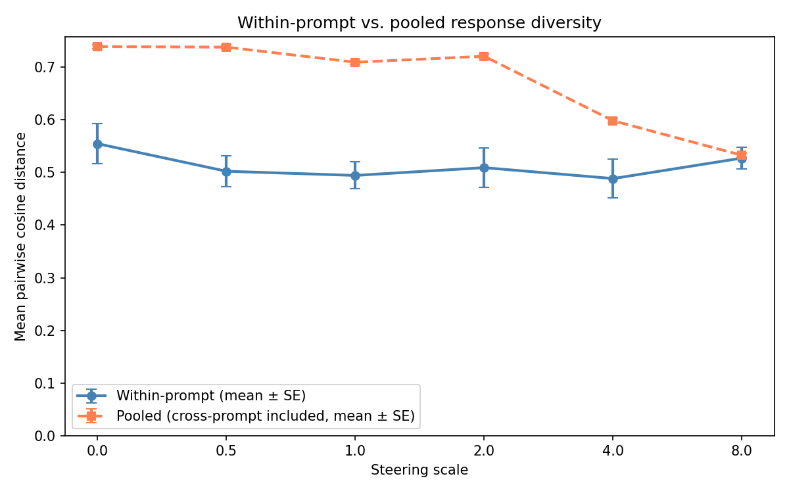
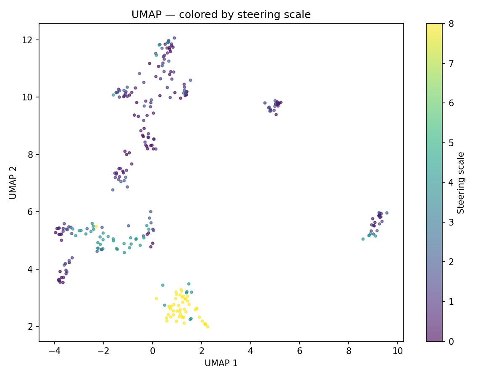

Coverage gain on HumanEval+ (scale 2.0, temp 0.8).
Pass@k measures the probability that at least one of k independent samples solves a problem. If steering reduces diversity, pass@k should drop faster than pass@1 as k grows — because similar samples are less likely to cover different solutions.
We define coverage gain = pass@k − pass@1, isolating the benefit of multiple diverse attempts from single-sample quality. On HumanEval+ (164 problems, n=100 samples, Qwen2.5-1.5B steered with a "happy" vector at α=2), steering significantly reduces coverage gain at k=2–25 (omnibus p = 0.025), confirming diversity loss beyond the pass@1 drop.

Within-prompt vs. pooled Sentence-BERT cosine distance across steering scales (happy concept, Qwen2.5-1.5B).

UMAP projection of Sentence-BERT embeddings, colored by steering scale. This plots the embeddings for the responses to 10 prompts together, resulting in 11 clusters (one for each prompt, and one for the collapse that happens at extreme amounts of steering)

Scenario validation: ak curves for five synthetic scenarios (GPT-2 vs. Qwen2.5-32B). To flatten the noise, the a_k curves for many permutations of responses are calculated and averaged.
The main idea is that if responses are similar, it should be possible to predict one, given the other.
This mutual information can be measured using pretrained base models. We feed responses sequentially into a base model and measure how much each new response's (tokenizer-agnostic) surprise drops given previous responses.
The excess entropy E (blue area) measures the total learnable structure among responses. A separate coherence term C ensures noise is not rewarded. The product D = C × E gives a single diversity score.
The scenario validation (left, bottom) confirms the metric correctly distinguishes cases: pure noise is flat (E ≈ 0), multi-mode declines progressively, and one-mode drops steeply. Coherence C identifies incoherent outputs (C ≈ 0.01 for noise vs. ≈ 0.5 for coherent text).


Left: Summary metrics vs. true mode count m (Qwen2.5-3B). Efit (sigmoid-extrapolated excess entropy) increases monotonically. Right: ak curves take longer to reach their asymptote with more modes.